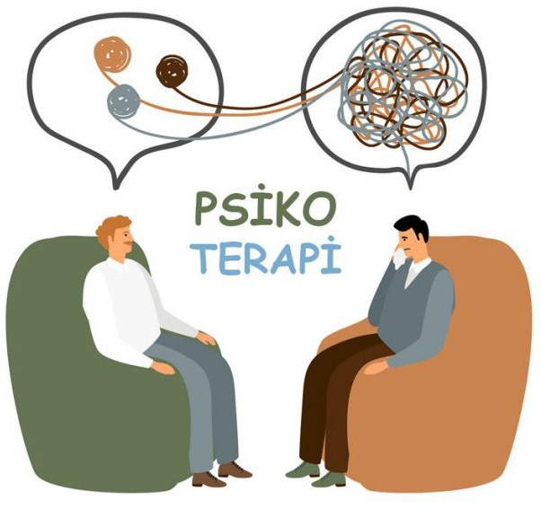

Makale
Kaygının Günlük Yaşama Etkilerini Anlamak
Kaygının bedensel, zihinsel ve duygusal yansımalarını anlamaya dair kısa bir değerlendirme.
Klinik Psikolog & Psikoterapist
Size özel, güvenli ve yargılayıcı olmayan bir terapi deneyimi sunarak yaşamınızda olumlu değişiklikler yapmanıza yardımcı oluyoruz.
Hakkımda

Lisans eğitimimi Beykent Üniversitesi Psikoloji bölümünde, yüksek lisans eğitimimi ise Altınbaş Üniversitesi Klinik Psikoloji programında tamamladım.
Yetişkin, çift ve ailelerle psikoterapi süreçleri yürütüyorum. Seanslarımı online olarak gerçekleştiriyorum. Psikoterapi yaklaşımımda; Bilişsel Davranışçı Terapi (CBT), Şema Terapi, Kabul ve Kararlılık Terapisi (ACT), Psikodinamik Yönelimli Terapi ve EMDR tekniklerinden yararlanıyorum.
Terapi sürecine kişinin yaşamında daha fazla farkındalık, içgörü ve denge kazandırmak amacıyla yaklaşıyorum. Her bireyin yaşantısının kendine özgü olduğuna inanıyor; güvenli, yargılayıcı olmayan bir alanda kişinin kendi iç kaynaklarını keşfetmesini destekliyorum. Psikoterapiyi yalnızca bir sorun çözme yöntemi değil, aynı zamanda kendini anlamanın ve dönüşümün kapısı olarak görüyorum.
Psikoterapi

Hayatın içinde zaman zaman hepimiz zorlanabilir, yönümüzü kaybedebilir ya da içsel çatışmalarla baş başa kalabiliriz. Psikoterapi, bu karmaşa içinde kişinin kendisini daha yakından tanımasını, iç dünyasındaki düğümleri fark edip çözümlemesini ve yaşamla olan ilişkisini yeniden şekillendirmesini destekleyen bir süreçtir.
Çalışmalarımda bütüncül bir yaklaşımı benimsiyorum. Her bireyin ihtiyacına ve kişilik yapısına göre terapi sürecini şekillendiriyorum.
Bilişsel Davranışçı Terapi (CBT) ile düşünce-duygu-davranış döngülerini ele alıyor, işlevsel olmayan inanç ve kalıpları dönüştürmeyi hedefliyorum.
Şema Terapi ile kökeni çocukluk dönemine uzanan derin yapılarla çalışıyor, tekrarlayan ilişki döngülerini anlamaya odaklanıyorum.
Kabul ve Kararlılık Terapisi (ACT) ile kişinin acı verici deneyimlerle olan ilişkisini yeniden yapılandırmasına destek oluyor, değer odaklı bir yaşam sürmesine alan açıyorum.
EMDR yöntemiyle travmatik yaşantıların etkisini hafifletmeye yönelik çalışmalar yapıyorum.
Psikodinamik yaklaşım ise bireyin bilinçdışı süreçlerini anlamaya, içsel çatışmaların kökenine inerek daha derin bir içgörü kazandırmaya yardımcı oluyor.
Terapi süreci, yargılayıcı olmayan bir ilişki zemininde güven, açıklık ve saygı çerçevesinde ilerler. Bu süreçte hedefim; kişinin yaşantısını daha sağlıklı, farkındalık dolu ve kendisiyle temas halinde bir şekilde sürdürebilmesini desteklemektir.
Çalışma Alanlarım
Yoğun kaygı, endişe ve zihinsel yükle baş etme desteği.
İçe çekilme, umutsuzluk ve motivasyon kaybını anlama süreci.
Zorlayıcı yaşantıların etkisini güvenli biçimde ele alma desteği.
İletişim, sınır ve duygusal bağ kurma alanlarında farkındalık.
Treatment and support for sexual health problems and sexual dysfunctions.
We focus on attachment styles, lack of trust, and building trust in relationships.
We address loss, grief, and the healthy processing of the grieving process.
We examine family conflicts, parent-child relationships, and family dynamics.
Yoğun öfke duygusunu fark etme ve düzenleme çalışmaları.
Kendilik algısını güçlendirme ve iç sesi dönüştürme süreci.
Zihinsel ve duygusal yorgunlukla baş etme konusunda destek.
Blog
Kaygının bedensel, zihinsel ve duygusal yansımalarını anlamaya dair kısa bir değerlendirme.
Sağlıklı ilişkilerde kişisel sınırların rolüne dair temel bir çerçeve sunan kısa yazı.
İletişim
Sorularınız veya randevu talepleriniz için benimle iletişime geçebilirsiniz. En kısa sürede size geri dönüş yapacağım.
+90 535 923 57 28
psk.bariskarahuseyin@gmail.com
Küçükçekmece, İstanbul
Pazartesi - Cuma: 10:00 - 18:00
Cumartesi: Randevu ile
SSS
Terapi süresi kişinin ihtiyaçlarına bağlıdır. Kişilerle başlangıçta 4-6 seans görmek iyi bir başlangıçtır. Terapi, hızlı iyileşme sağlayabilir veya daha uzun bir süreç olabilir.
Evet, araştırmalar göstermektedir ki online terapi yüz yüze terapinin yanında aynı derecede etkilidir. Rahat ve güvenli ortamından danışmanlık almak, bazı kişiler için daha uygun olabilir.
Evet, randevu değişiklikleri yapabilirsiniz. Ancak, en az 24 saat önceden bildirim yapmanız önemlidir.
Evet, mesleki etik kuralları gereğince tüm bilgileriniz tamamen gizli tutulur. Sadece yasal zorunluluklar söz konusu olduğunda bu sınırlı hale gelebilir.
Psikolog ruh sağlığını psikolojik yöntemlerle tedavi eder, ilaç reçete edemez. Psikiyatrist ise tıp doktoru olup ilaç yazabilir ve psikiyatrik rahatsızlıklarla ilgilenir.
Ödeme seçenekleri hakkında bilgi almak için lütfen bizi telefon veya email yoluyla iletişime geçiniz.